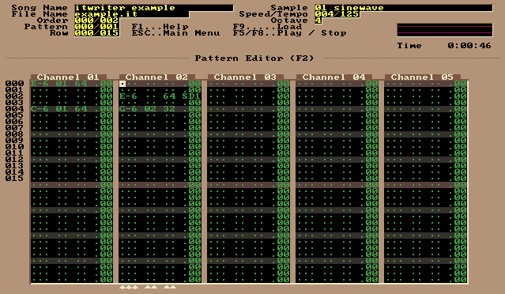

itwriter is a JavaScript library for writing Impulse Tracker format audio files.
The following code generates an Impulse Tracker module binary file dynamically using JavaScript and attaches it to a download link. Click here to download it.
See the itwriter project on GitHub for more info.
